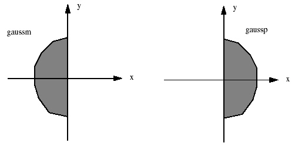

Parent topic: modelflow (Version 1)
VT5 Resist Model Commands List
This command creates an optimized VT5 model and an optimized optical model (or maskwriter model) using a fixed model optimization procedure that begins with a pair of “nominal” models.
modelflow
{Input Arguments}
[ Output Arguments ]
[ Stage 0 Arguments ]
[ Stage 1 Arguments ]
[ Stage 2 Arguments ]
[ Stage 3 Arguments ]
[Dm [{gauss | gaussp | gaussm}] begin end step]
[Dn [{gauss | gaussp | gaussm}] begin end step]
[Dk [{gauss | gaussp | gaussm}] begin end step]
[Dj [{gauss | gaussp | gaussm}] begin end step]}
[stage3a {off | copy_ref_thresh | crosscheck | nocrosscheck}]
[stage3b {off | filter}]]
The optional gauss (full density), gaussm (Gauss-minus, which is 0 for positive X and standard for X <= 0), and gaussp (Gauss-plus, which is 0 for negative X, and standard for X >= 0) arguments indicate the kind of kernel that is being evaluated. The default is gauss.
Figure 1. gaussm and gaussp Gaussian Density Kernels
 |
Up to four regular or directional density kernels (Dm, Dn, Dk, Dj) can be optimized simultaneously. The indexes of the kernels must be unique from each other. Optimization is performed using the full factorial search method. The valid range for begin and end values is limited by the interval [0.01, 2.01] in um.
An optional argument used to evaluate variations of the numbered VT5 Gaussian density kernel specified by Dm where m=1,2,…,16. If no kernels are used in the nominal VT5 model, then this does nothing. Default = use nominal CKERNEL D1.
An optional argument used to evaluate variations of the numbered VT5 Gaussian density kernel Dn, where n != m, n=1,2,…,16. If Dn is not specified in the nominal VT5 model, then this does nothing. Default = use nominal CKERNEL D2.
An optional argument used to evaluate variations of the numbered VT5 Gaussian density kernel Dk, where k != m or n, k=1,2,…,16. If Dk is not specified in the nominal VT5 model, then this does nothing. Default = use nominal CKERNEL D3.
An optional argument used to evaluate variations of the numbered VT5 Gaussian density kernel Dj, where j != m, n, or k, j=1,2,…,16. If Dj is not specified in the nominal VT5 model, then this does nothing. Default = use nominal CKERNEL D4.
For an example usage of this stage, see “Example 3: VT5 With Gaussian Half-densities in the section.
An optional argument used to control stage 3a, in which the threshold polynomial is optimized.
The first two settings instruct modelflow to skip stage 3a. When skipping this stage, you have the following options:
off — use nominal threshold polynomial
copy_ref_thresh — use the reference threshold as the threshold polynomial (CTR).
The second group of settings control how modelflow performs the stage 3a optimization. These options are:
crosscheck — perform crosschecking in all cases
nocrosscheck — do not perform crosschecking in any case
Crosschecking involves splitting the data in the input spreadsheet into two data sets (even and odd) that can be used to check for a stable model. If both sets converge to the same eigenvalue the VT5 model is stable. If they do not converge, either some of the data in one of the groups is bad or the model is not stable.
The RMS of the VT5 model from the odd dataset is verified for the even dataset, yielding RMS1. Then the VT5 model from the even dataset is verified for the odd dataset, yielding RMS2. When the minimum eigenvalue is decreased, RMS1 and RMS2 first decrease, which indicates that this eigenvalue increases the fitness of both models on verification data at first, but then the fitness starts decreasing. This indicates that starting from some minimum eigenvalue the models overfit into the data and stop predicting behavior of the verification datasets.
The modelflow tool considers the best minimum eigenvalue to be the arithmetic average of these two values.
By default, modelflow performs crosschecking any time the number of threshold coefficients exceeds 16.
An optional argument used to control stage 3b optimization, which optimizes bias polynomials.
off — skip stage 3b and use nominal bias polynomial.
filter — use a spreadsheet filter when optimizing the bias polynomial coefficients.
Filter syntax:
{stype | row X [col Y]}… end
One or more structure types can be selected by the filter. The filter can match by row and column, by structure name, or using the keyword “all” to match all structures. The terminating “end” is required to signify the end of the filter.
Some examples:
filter iso pitch end // matches iso and pitch structures
filter row 8 row 9 iso end // matches iso and row 8 and row 9Nominal models are the initial models, specified by the setup file. In this case, the models are the optical model and the VT5 model used as a starting point for creating the optimized models.
The nominal models provide default values for parameters that are not optimized. modelflow evaluates variations to the nominal models, as specified by the command line. It optimizes parameters in distinct optimization stages that are performed sequentially.